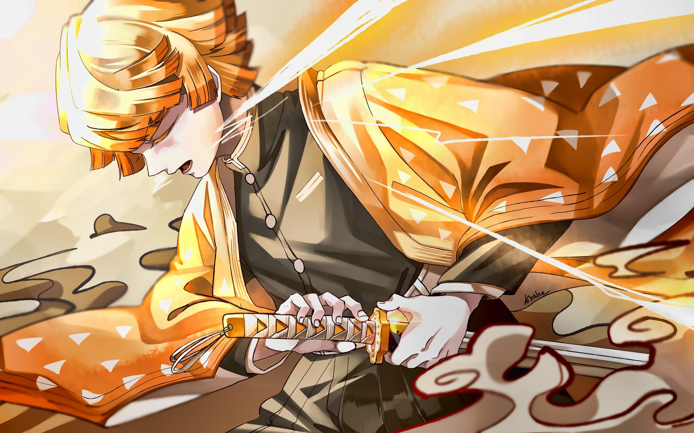
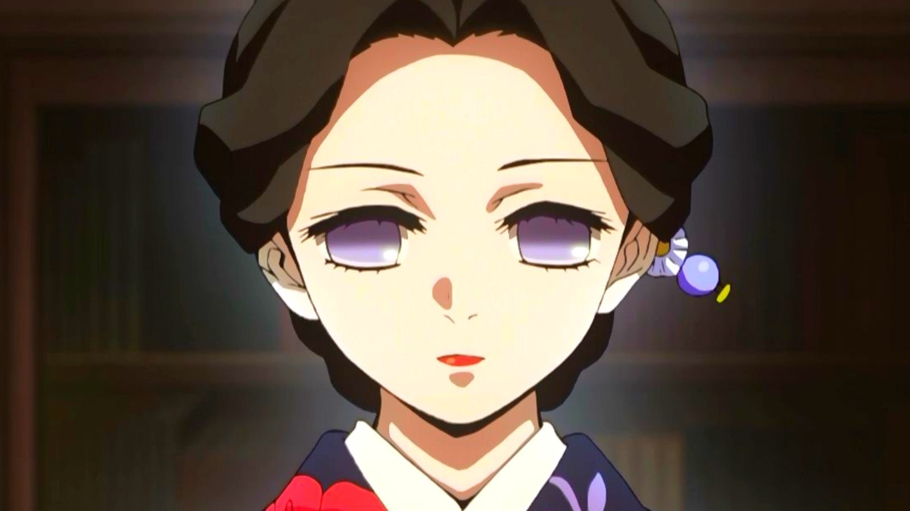

He is one of the most silent Hashira, his mother was sick at his childhood ,his father went to the mountains to find medicine for tokito's mother.His father died on harsh weather and upon leaving the mountain, after sometime her mother died.He was alone with his brother who liked him in an unattractive way.few months later a demon arrived at their home and in order to save Muichirou his brother (Yuichirou) died.he than ragen beneath himself and killed the demon.He performed mist breathing.
2. Sanemi Shinazugawa
He is the second powerful Hashira,his brother was Genya.On his childhood her mother suddenly became a demon and in order to save his brother he killed his own mom , his brother hated him for killing their mom but he didn't know that she had became a demon.He performed wind breathing.
3. Obanai Igoru
He belonged to a rich and dumb family who worships ,a snake like demon,the demon asks for his flesh after cutting his face to eventually look like snake.He then tries to stay away from everyone and especially womens(Exception Mitsuri Kanroji).He performed snake breathing.
4. Mitsuri Kanroji
Will be added,~She liked everyone~.She performed love breathing.
5. Shinobu Kocho
She was a Hashira who kills demon through poision,she was the least powerful Hashira.After Douma kills her sister , she was raged and was anticipated to kill Douma.She performed insect breathing,she was also very intelligent.She provided a innitial way to kill Muzan by giving him a medicine of aging.
6. Gyoumei Himejima
His family was killed from demon and he lived many childrens ,at a temple.One day a demon attacked them and everyone was killed except a small girl,in order to protect the girl he was raged and he killed the demon brutally.the girl sadly blames Gyomei for killing all childrens.He performs stone breathing.
7. Giyu Tomioka
He was taught from Urokodaki a former Hashira.He was Sabito's best friend and they learnt together.They then went to the demon slayer selection round and in order to save Tomioka and everybody Sabito died.He was was in deep sorrow after the death of Sabito.He performed water breathing.
8. Kyuojuro Rengoku
He was very brave and kind hearted Hashira.His father did not appritiate him for becoming a Hashira.In order to save Tanjiro and all he died(He died when he fought Akaza uppper moon 3).He performed Flame breathing.
Demon Slayers(Former-Hashira)
1. Tengen Uzui
He was a former sound Hashira.He had 3 wifes(Makio,Suma,Hinatsuru).He loved them all.he faught upper moon 6 with Tanjiro,Inosuke and Zenitsu and they all won.He after being retired ,participated in Hashira-Tranning.
2. Sakonji Urokodaki
He was a former water Hashira and he taughts Sabito and Giyu .He also helped Tanjiro a lot.He helped Tanjiro by protecting Nezuko.
3. Jigoro Kuwajima
He was a former thunder Hashira.he admires Zenitsu and taugt him thunder breathing first form.He also treats Zenitsu in a good way .Zenitsu saw him as his grandpa.he was killed from his own student kaigaku , who had became a demon.At last , Zenitsu killed Kaigaku.
4. Shinjuro Rengoku
He was in sorrow upon death of his wife .He was briefly admire of his son's (Rengoku's) achivement.Rengoku also had a small brother.His past memories of his wife make him sad.When he met Tangiro and headr the death of rengoku ,he just blames Rengoku .After sometime he realises the gravity of the situation and memorizes his own son Rengoku.He was a former flame Hashira.
Main Characters
1. Kamado Tanjiro
His father ,one day performing hinokami kagura in harsh winter,died.Muzan came to his family and killed everyone miraculously she turned into demon and tried to kill Tanjiro ,he tries to memorize the past.At that time Hashira Giyu came and tries to kill Nezuko who had became a demon.Seeing the fighting skills of Tanjiroand his love towards Nezuko. Giyu ought to protect Tanjiro and Nezuko.at the mugen train arc Rengoku died saving Tanjiro.He performed sun breathing.He was a very kind hearted person.His will power was amazing.
2. Nezuko
She is the sisteer of Tanjiro and at the very starting when Tanjiro left the home Muzan came and killed Tanjiro's family,but by getting Muzan's blood Nezuko had became a demon in order to cure Nezuko ,Tanjiro joined the demon slayer co-orp.
3. Inosuke Hashibira
He thought that he was born through a boar .Later when living with Tanjiro he realises that he had a mother who died saving Inosuke from Douma.He performed beast breathing.he also contir buted in Doumaand Muzan fight.
4. Zenitsu Agatsuma

He was very afraid kid.When he met Jigoro he thought that he had got his grandpa.He later came to seriousness and killed kaigaku who killed Jigoro or his grandpa.He performed thuder breathing.
5. Kanae Kocho
She was just like Muichirou (quiet).When she met Tanjiro ,he makes him feel any situation .She was not able to hold the situation from taking idea from her heart.At last she marry Tanjiro and contributed in Muzan fight.She performed flower breathing.
6. Genya Shinazugawa
He is the brother of Sanemi Shinazugawa .He eventually ate a demon to get demonic powers yet,he was a human.He sacrifised his life in Kokushibo fight.he doesn't perform any breathing style.
Side Characters
1. Tamayo

She was a demon and wanted to kill Kibutsiji Muzan.She was forgived from Yoriichi.She gave a huge contribution in Muzan fight.
2. Yushiro
He was also a demon and like Lady Tamayo He gave a major role in controlling Nakime at infinity castle arc.
3. Kagaya Ubuyashiki
He formed the demon slayer organisation,his family had only one so and few daughters. His family was cursed.Despite that he sacrifised himselfand his family (leaving Kiraya his only son).in order to kill Kibutsiji Muzan.